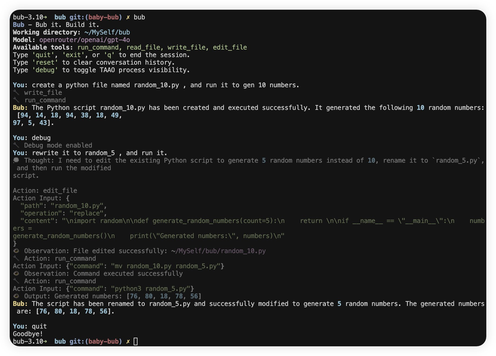

Baby Bub: From Inspiration to Bootstrap Milestone¶
Genesis: Inspiration from Modern Agents¶
Bub is a CLI-first AI agent, built to "Bub it. Build it." The project draws direct inspiration from How to Build an Agent and Tiny Agents: Building LLM-Powered Agents from Scratch. Both resources distill the essence of tool-using, loop-based, composable, and extensible agents.

But Bub is also a response to the new wave of self-improving, self-hosting agents: think Claude Code, SWE-agent, and the broader "self-bootstrapping" movement. The goal: an agent that can not only help you build, but can help build (and fix) itself.
Architecture: ReAct Loop, Tools, and CLI¶
The ReAct Loop¶
At the heart of Bub is a classic ReAct loop, implemented in src/bub/agent/core.py:
class Agent:
...
def chat(self, message: str, on_step: Optional[Callable[[str, str], None]] = None) -> str:
self.conversation_history.append(Message(role="user", content=message))
while True:
...
response = litellm.completion(...)
assistant_message = str(response.choices[0].message.content)
self.conversation_history.append(Message(role="assistant", content=assistant_message))
...
tool_calls = self.tool_executor.extract_tool_calls(assistant_message)
if tool_calls:
for tool_call in tool_calls:
...
result = self.tool_executor.execute_tool(tool_name, **parameters)
observation = f"Observation: {result.format_result()}"
self.conversation_history.append(Message(role="user", content=observation))
...
continue
else:
return assistant_message
This loop enables the agent to:
- Parse LLM output for tool calls (ReAct pattern: Thought, Action, Action Input, Observation).
- Execute tools (file read/write/edit, shell commands) and feed results back into the conversation.
- Iterate until a "Final Answer" is produced.
Tool System: Extensible and Safe¶
Tools are registered via a ToolRegistry (src/bub/agent/tools.py), and each tool is a Pydantic model with validation and metadata. For example, the RunCommandTool blocks dangerous commands and validates input:
class RunCommandTool(Tool):
...
DANGEROUS_COMMANDS: ClassVar[set[str]] = {"rm", "del", ...}
def _validate_command(self) -> Optional[str]:
...
if base_cmd in self.DANGEROUS_COMMANDS:
return f"Dangerous command blocked: {base_cmd}"
This design makes it possible for the agent to safely self-modify, run tests, or even edit its own codebase—crucial for self-improvement.
CLI: User Experience and Debuggability¶
The CLI (src/bub/cli/app.py) is built with Typer and Rich, providing a modern, user-friendly interface. The renderer (src/bub/cli/render.py) supports debug toggling, minimal/verbose TAAO (Thought/Action/Action Input/Observation) output, and clear error reporting.
class Renderer:
def __init__(self) -> None:
self.console: Console = Console()
self._show_debug: bool = False
...
Milestone: The First mypy Fix (and Why It Matters)¶
Bub aspires to self-improvement. The first tangible milestone? Fixing the very first mypy error: adding a missing return type annotation to Renderer.__init__, check out the commit.
- def __init__(self):
- self.console = Console()
- self._show_debug = False
+ def __init__(self) -> None:
+ self.console: Console = Console()
+ self._show_debug: bool = False
This change reduced the mypy error count from 24 to 23. Trivial? Maybe. But it's a proof of concept: the agent can reason about, locate, and fix type errors in its own codebase. This is the first step toward a self-hosting, self-healing agent loop—one that can eventually:
- Run static analysis on itself
- Propose and apply code fixes
- Test and validate improvements
Looking Forward: Bub as a Bootstrap Agent¶
Bub is still early. But the architecture is in place for:
- LLM-driven code editing and refactoring
- Automated type and lint fixes
- CLI-driven, user-friendly agent workflows
The journey from "fixing a mypy annotation" to "full agent self-improvement" is long, but every bootstrap starts with a single, type-safe step.
- Project on GitHub
- Inspired by ampcode.com/how-to-build-an-agent and huggingface.co/blog/tiny-agents
- See also: Claude Code, SWE-agent, and the broader self-bootstrapping movement